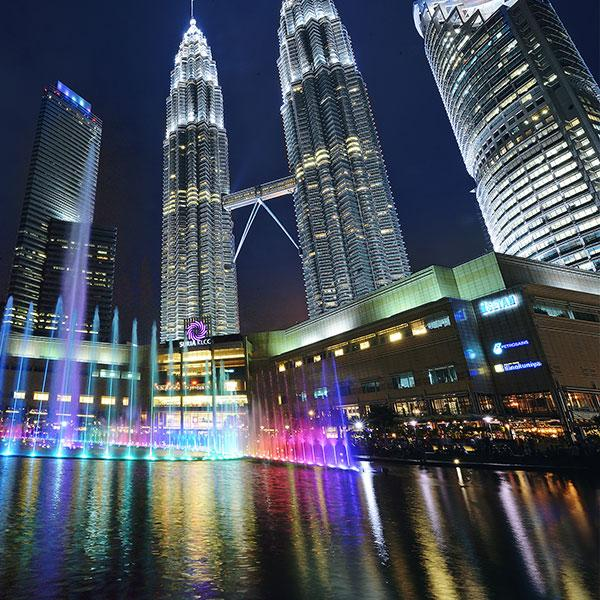

  <ion-header>
    <ion-toolbar>
      <ion-buttons slot="start">
        <ion-back-button></ion-back-button>
      </ion-buttons>
      <ion-title><br>Kuala Lumpur<br></ion-title>
    </ion-toolbar>
  </ion-header>
  

  <ion-content [fullscreen]="true">
    <ion-header collapse="condense">
      <ion-toolbar>
        <ion-title size="large">Kuala Lumpur</ion-title>
      </ion-toolbar>
    </ion-header>

  <ion-card>
    
    <ion-card-header>
      <ion-card-title>KLCC</ion-card-title>
    </ion-card-header>
    <ion-card-content>
      It is the world's tallest twin towers. It is open to the public, so everyone can get to enjoy an amazing bird's eye view of the city.
    </ion-card-content>
  
  </ion-card>